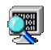

WinDbg: analyze crash dump
Contents
|  | |
| Software version | |
|---|---|
| Operating System | Windows 2008 R2 |
| Website | |
| Last Update | 16/02/2014 |
| Others | |
{kind=link}
1 Introduction
WinDbg is a multipurpose debugger for Microsoft Windows, distributed on the web by Microsoft. It can be used to debug user mode applications, drivers, and the operating system itself in kernel mode. It is a GUI application, but it has little in common with the more well-known, but less powerful, Visual Studio Debugger.
WinDbg can be used for debugging kernel-mode memory dumps, created after what is commonly called the Blue Screen of Death which occurs when a bug check is issued. It can also be used to debug user-mode crash dumps. This is known as post-mortem debugging.
WinDbg also has the ability to automatically load debugging symbol files (e.g., PDB files) from a server by matching various criteria (e.g., timestamp, CRC, single or multiprocessor version). This is a very helpful and time saving alternative to creating a symbol tree for a debugging target environment. If a private symbol server is configured, the symbols can be correlated with the source code for the binary. This eases the burden of debugging problems that have various versions of binaries installed on the debugging target by eliminating the need for finding and installing specific symbols version on the debug host. Microsoft has a public symbol server that has most of the public symbols for Windows 2000 and later versions of Windows (including service packs).
Recent versions of WinDbg have been and are being distributed as part of the free Debugging Tools for Windows suite, which shares a common debugging back-end between WinDbg and command line debugger front-ends like KD, CDB, and NTSD. Most commands can be used as is with all the included debugger front-ends.[1]
2 Installation
To get WinDbg working, you need 2 things:
- WinDbg: http://www.microsoft.com/en-us/download/confirmation.aspx?id=8279
- Symbols: http://msdn.microsoft.com/en-us/windows/hardware/gg463028
Install them, then add an environment variable with the following:
- Variable name: _NT_SYMBOL_PATH
- Value: C:\Symbols
Then close your session and login again.
3 Usage
You're now ready to use the debugger ! Open WinDbg, click on "Open crash dump" and select your "MEMORY.DMP". Then launch that command:
| |
0: kd> !analyze -v ******************************************************************************* * * * Bugcheck Analysis * * * ******************************************************************************* CLOCK_WATCHDOG_TIMEOUT (101) An expected clock interrupt was not received on a secondary processor in an MP system within the allocated interval. This indicates that the specified processor is hung and not processing interrupts. Arguments: Arg1: 0000000000000008, Clock interrupt time out interval in nominal clock ticks. Arg2: 0000000000000000, 0. Arg3: fffff88001f3f180, The PRCB address of the hung processor. Arg4: 0000000000000004, 0. Debugging Details: ------------------ BUGCHECK_STR: CLOCK_WATCHDOG_TIMEOUT_18_PROC DEFAULT_BUCKET_ID: VISTA_DRIVER_FAULT PROCESS_NAME: System CURRENT_IRQL: d STACK_TEXT: fffff800`02bfc2c8 fffff800`01728a89 : 00000000`00000101 00000000`00000008 00000000`00000000 fffff880`01f3f180 : nt!KeBugCheckEx fffff800`02bfc2d0 fffff800`016dbeb7 : fffff980`00000000 fffff800`00000004 00000000`0002625a fffff800`016f11e4 : nt! ?? ::FNODOBFM::`string'+0x4e2e fffff800`02bfc360 fffff800`0161c1c0 : 00000000`00000000 fffff800`02bfc510 fffff800`016383c0 fffff800`00000000 : nt!KeUpdateSystemTime+0x377 fffff800`02bfc460 fffff800`016cdb73 : ffffffff`ffaef08d fffff800`016383c0 fffff800`02bfc6b0 00000000`00000000 : hal!HalpRtcClockInterrupt+0x130 fffff800`02bfc490 fffff800`0161617e : fffff800`01617790 00000000`00000000 fffffa80`491fc840 fffff880`01786ee0 : nt!KiInterruptDispatchNoLock+0x163 fffff800`02bfc628 fffff800`01617790 : 00000000`00000000 fffffa80`491fc840 fffff880`01786ee0 00000000`00000007 : hal!HalpGetPmTimerPerfCounterValue+0x10 fffff800`02bfc630 fffff880`0169e059 : 00000000`00369e99 00000042`2e0a39f7 fffffa80`491e0470 fffff880`0169fe22 : hal!KeQueryPerformanceCounter+0x9c fffff800`02bfc660 fffff880`0169d10a : 00000000`00000018 00000000`00000000 00000000`00000000 00000000`00000005 : tcpip!TcpUpdateMicrosecondCount+0x79 fffff800`02bfc6a0 fffff800`016dd062 : fffff800`02bfc938 00000000`00000000 fffff800`02bfc860 00000000`00000005 : tcpip!TcpPeriodicTimeoutHandler+0x7a fffff800`02bfc7a0 fffff800`016dcf06 : fffff800`018ce080 00000000`001bc201 00000000`00000000 00000000`00000102 : nt!KiProcessTimerDpcTable+0x66 fffff800`02bfc810 fffff800`016dcdee : 00000042`2e0a39f7 fffff800`02bfce88 00000000`001bc201 fffff800`018462a8 : nt!KiProcessExpiredTimerList+0xc6 fffff800`02bfce60 fffff800`016dcbd7 : fffffa80`49767dc7 fffff800`001bc201 00000000`00000000 00000000`00000000 : nt!KiTimerExpiration+0x1be fffff800`02bfcf00 fffff800`016d4165 : 00000000`00000000 fffffa80`48c00680 00000000`00000000 fffff880`00e28a00 : nt!KiRetireDpcList+0x277 fffff800`02bfcfb0 fffff800`016d3f7c : 00000000`00000010 00000000`00000286 fffff880`029e0598 00000000`00000018 : nt!KxRetireDpcList+0x5 fffff880`029e0570 fffff800`0171d453 : fffff800`016cdba0 fffff800`016cdc0c 00000000`17ed5aa0 fffff800`016383c0 : nt!KiDispatchInterruptContinue fffff880`029e05a0 fffff800`016cdc0c : 00000000`17ed5aa0 fffff800`016383c0 00000000`f8d15f7d 00000000`1b7181f5 : nt!KiDpcInterruptBypass+0x13 fffff880`029e05b0 fffff880`01207c47 : 00000000`00000015 00000000`00000000 d4d8e501`cc8cd0a4 669495ef`1e7cdce3 : nt!KiInterruptDispatchNoLock+0x1fc fffff880`029e0740 fffff880`01205616 : fffff880`029e09a0 fffff800`17ed5aa0 00000000`4b38f223 00000000`48bebae9 : cng!SHA256Transform+0x757 fffff880`029e07e0 fffff880`01204eb5 : 00000000`00020000 fffff880`029e0844 fffff8a0`14c840a8 00000000`00000001 : cng!SHA256Update+0x10b fffff880`029e0820 fffff880`012053ed : fffffa80`48f2f060 fffff800`016d99f3 fffffa80`20206f49 fffff8a0`01a08410 : cng!GatherRandomKey+0x255 fffff880`029e0be0 fffff800`019c7f4d : 00000000`00000001 00000000`00000001 fffffa80`4cd15610 fffffa80`48c00680 : cng!scavengingWorkItemRoutine+0x3d fffff880`029e0c80 fffff800`016dba21 : fffff800`0186e600 fffff800`019c7f01 fffffa80`48c00600 00000000`00000000 : nt!IopProcessWorkItem+0x3d fffff880`029e0cb0 fffff800`0196ecce : 00000000`00000000 fffffa80`48c00680 00000000`00000080 fffffa80`48bd1040 : nt!ExpWorkerThread+0x111 fffff880`029e0d40 fffff800`016c2fe6 : fffff880`027b0180 fffffa80`48c00680 fffff880`027bb4c0 00000000`00000000 : nt!PspSystemThreadStartup+0x5a fffff880`029e0d80 00000000`00000000 : fffff880`029e1000 fffff880`029db000 fffff880`029e05b0 00000000`00000000 : nt!KxStartSystemThread+0x16 STACK_COMMAND: kb SYMBOL_NAME: ANALYSIS_INCONCLUSIVE FOLLOWUP_NAME: MachineOwner MODULE_NAME: Unknown_Module IMAGE_NAME: Unknown_Image DEBUG_FLR_IMAGE_TIMESTAMP: 0 FAILURE_BUCKET_ID: X64_CLOCK_WATCHDOG_TIMEOUT_18_PROC_ANALYSIS_INCONCLUSIVE BUCKET_ID: X64_CLOCK_WATCHDOG_TIMEOUT_18_PROC_ANALYSIS_INCONCLUSIVE Followup: MachineOwner --------- |
It is also possible to get more informations by viewing loaded modules:
| |
0: kd> lmv
start end module name
fffff800`014e1000 fffff800`014eb000 kdcom (deferred)
Image path: kdcom.dll
Image name: kdcom.dll
Timestamp: Tue Jul 14 03:31:07 2009 (4A5BDFDB)
CheckSum: 00009363
ImageSize: 0000A000
Translations: 0000.04b0 0000.04e4 0409.04b0 0409.04e4
fffff800`01608000 fffff800`01651000 hal (pdb symbols) c:\symbols\hal.pdb\A085D08B9C5D4BFDBA48AC285BDA03F22\hal.pdb
Loaded symbol image file: hal.dll
Image path: hal.dll
Image name: hal.dll
Timestamp: Sat Nov 20 14:00:25 2010 (4CE7C669)
[...] |
4 References
http://www.networkworld.com/news/2005/041105-windows-crash.html